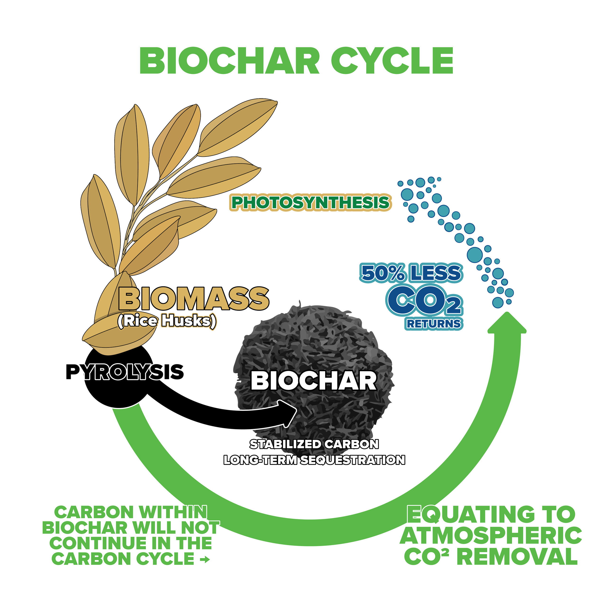

SPX™ / SPX BioChar™
SPX BioChar™
Biomass → Pyrolysis → Biochar. Soil Passport positions SPX BioChar™ not as another biochar certification, but as a global digital standard for measuring the agricultural value and traceability of biochar in soil, sitting above the farm-use layer and connecting biochar, soil, crop, water, carbon and farmer economics.
SP-BIS
The Soil Passport™ Biochar Impact Standard
Global Standard for Biochar Application, Soil Impact & Traceability
Every tonne of biochar should have a traceable journey from biomass source to soil application and measurable impact.
This complements existing biochar production and carbon-removal standards, such as production and quality-assurance frameworks and durable-carbon-removal methodologies, rather than trying to replace them. SP-BIS is the digital farm-to-soil impact layer built around that ecosystem.

1 — Biochar Source Standard
Every batch receives a unique Biochar Batch ID.
Recorded per batch
2 — Biochar Quality Passport
Laboratory and device measurements, recorded per batch.
Physical
- Moisture
- Particle size
- Bulk density
Chemical
- pH
- EC
- Total carbon
- Organic carbon
- Ash
- Nutrients
- Potential contaminants
Carbon
- Carbon content
- Stable carbon fraction
- Carbon-removal calculation
- Relevant permanence methodology
The carbon-removal calculation is designed to be compatible with recognised third-party methodologies rather than inventing an independent carbon-credit claim, consistent with how established carbon-removal methodologies require evidence on biomass sourcing, production and end use.
3 — Soil Baseline Passport
Recorded before biochar application.
This is where the Soil Passport device, app and satellite intelligence become central.

4 — Biochar Application Record
Field → Biochar Batch → Application: full digital traceability.
Example record:
Crop: Paddy
Area: 2 acres
Biochar Batch: NZC-2027-0042
Application: X tonnes/acre
Application date: XX/XX/XXXX
5 — Water Retention & Soil Performance
Measured before and after application.
Soil Passport does not promise a fixed improvement in water retention, because the effect varies by biochar, soil and application conditions. Instead, the change is measured through the Soil Passport system.
Water
- Soil moisture
- Irrigation frequency
- Irrigation volume
- Water-holding characteristics
Soil
- SOC
- pH
- EC
- NPK
- Soil structure indicators
Crop
- Germination
- Plant growth
- Yield
- Crop quality
6 — Farmer Economics
Biochar Farmer Value Index™
Biochar cost, measured against potential savings and additional value, turning "biochar is good for soil" into a measured ₹/acre impact.
Inputs measured
- Biochar purchase cost
- Fertiliser expenditure
- Irrigation expenditure
- Crop yield
- Revenue/acre
- Net farmer benefit
Output
₹/acre impact
"Here is the measured economic and environmental impact of biochar on this farm," replacing a general claim with a specific, field-level number.
7 — Carbon Layer
Soil Passport Carbon Record
- Biomass
- Biochar
- Batch
- Field
- Soil
- Carbon
The system can calculate the relevant carbon-removal quantity subject to the applicable carbon methodology and third-party verification. Soil Passport does not claim that its own measurement automatically creates a carbon credit. Existing carbon standards require defined methodologies, independent verification and registry infrastructure, and SP-BIS is designed to work alongside them.
8 — SP-Biochar Impact Score™
Based on published thresholds and measurement protocols, not an arbitrary rating.
| Category | Measurement |
|---|---|
| Biochar Quality | Quality parameters |
| Soil Health | Baseline → post-application |
| Water | Moisture/water indicators |
| Crop | Yield/productivity |
| Carbon | Verified/removal calculation |
| Economics | Farmer value |
| Traceability | Field-to-batch record |
9 — Certification
Three Levels of Soil Passport Certification
A clear commercial pathway.
SP-Biochar Trace
Basic traceability
Batch → Farm → Application
SP-Biochar Impact
Traceability + measurement
Batch → Soil → Crop → Impact
SP-Biochar Carbon
Impact + carbon accounting
Batch → Soil → Carbon Removal, with independent verification
10 — The Global Vision
Soil Passport™: a global digital standard for soil, biochar & carbon intelligence.
- Measure
- Verify
- Trace
- Improve
NZLoop India
Produces biochar and demonstrates the model in real farms.
Soil Passport Global
Develops the measurement, traceability, data and impact standard, for use by biochar producers, farmers and projects globally.
This separation is strategically important: NZLoop is the implementation/operating business, while Soil Passport is the technology and standards platform.
Other SPX™ Pathways
Explore the rest of the SPX™ ecosystem.
SPX BioOil™
Biomass → Pyrolysis → Bio-oil
SPX BioTar™
Biomass → Thermal Conversion → Bio-tar
SPX BioH₂™
Biomass / Syngas → Reforming → Hydrogen
SPX Power™
Biomass → Energy Conversion → Electricity
SPX Carbon™
Carbon Measurement → MRV → Carbon Projects
FAQ
SPX BioChar™ questions, answered.
What is SPX BioChar™?
SPX BioChar™ is Soil